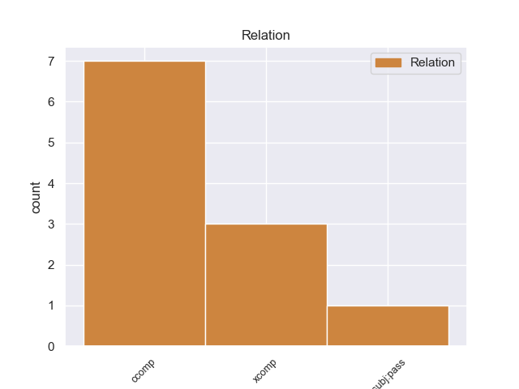
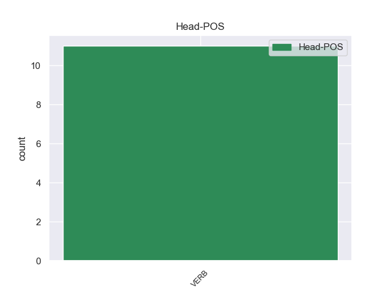
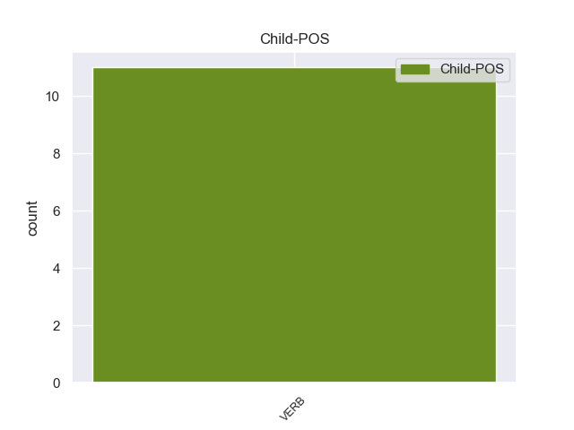

Distribution of features within this leaf



Agreement Rules sorted by frequency.
- When the dependent token is the clausal complement(ccomp) of the head token, and the dependent token is VERB.
1 Εδώ _ _ _ _ 0 _ _ _
2 και _ _ _ _ 0 _ _ _
3 ενάμισι _ _ _ _ 0 _ _ _
4 χρόνο _ _ _ _ 0 _ _ _
5 επισημαίνω επισημαίνω VERB VERB Aspect=Imp|Mood=Ind|Number=Sing|Person=1|Tense=Pres|VerbForm=Fin|Voice=Act 0 _ _ _
6 εδώ _ _ _ _ 0 _ _ _
7 σ _ _ _ _ 0 _ _ _
8 το _ _ _ _ 0 _ _ _
9 Κοινοβούλιο _ _ _ _ 0 _ _ _
10 ότι _ _ _ _ 0 _ _ _
11 δεν _ _ _ _ 0 _ _ _
12 μπορούμε μπορώ VERB VERB Aspect=Imp|Mood=Ind|Number=Plur|Person=1|Tense=Pres|VerbForm=Fin|Voice=Act 5 ccomp _ _
13 πια _ _ _ _ 0 _ _ _
14 να _ _ _ _ 0 _ _ _
15 χρησιμοποιούμε _ _ _ _ 0 _ _ _
16 την _ _ _ _ 0 _ _ _
17 έκφραση _ _ _ _ 0 _ _ _
18 ειρηνευτικές _ _ _ _ 0 _ _ _
19 διαδικασίες _ _ _ _ 0 _ _ _
20 σε _ _ _ _ 0 _ _ _
21 αυτά _ _ _ _ 0 _ _ _
22 τα _ _ _ _ 0 _ _ _
23 συμφραζόμενα _ _ _ _ 0 _ _ _
24 . _ _ _ _ 0 _ _ _
1 Εδώ _ _ _ _ 0 _ _ _
2 και _ _ _ _ 0 _ _ _
3 ενάμισι _ _ _ _ 0 _ _ _
4 χρόνο _ _ _ _ 0 _ _ _
5 επισημαίνω _ _ _ _ 0 _ _ _
6 εδώ _ _ _ _ 0 _ _ _
7 σ _ _ _ _ 0 _ _ _
8 το _ _ _ _ 0 _ _ _
9 Κοινοβούλιο _ _ _ _ 0 _ _ _
10 ότι _ _ _ _ 0 _ _ _
11 δεν _ _ _ _ 0 _ _ _
12 μπορούμε μπορώ VERB VERB Aspect=Imp|Mood=Ind|Number=Plur|Person=1|Tense=Pres|VerbForm=Fin|Voice=Act 0 _ _ _
13 πια _ _ _ _ 0 _ _ _
14 να _ _ _ _ 0 _ _ _
15 χρησιμοποιούμε χρησιμοποιώ VERB VERB Aspect=Imp|Mood=Ind|Number=Plur|Person=1|Tense=Pres|VerbForm=Fin|Voice=Act 12 xcomp _ _
16 την _ _ _ _ 0 _ _ _
17 έκφραση _ _ _ _ 0 _ _ _
18 ειρηνευτικές _ _ _ _ 0 _ _ _
19 διαδικασίες _ _ _ _ 0 _ _ _
20 σε _ _ _ _ 0 _ _ _
21 αυτά _ _ _ _ 0 _ _ _
22 τα _ _ _ _ 0 _ _ _
23 συμφραζόμενα _ _ _ _ 0 _ _ _
24 . _ _ _ _ 0 _ _ _
Disagree Examples:
1 Σ _ _ _ _ 0 _ _ _
2 το _ _ _ _ 0 _ _ _
3 μεταξύ _ _ _ _ 0 _ _ _
4 , _ _ _ _ 0 _ _ _
5 οι _ _ _ _ 0 _ _ _
6 υπηρεσίες _ _ _ _ 0 _ _ _
7 του _ _ _ _ 0 _ _ _
8 υπουργείου _ _ _ _ 0 _ _ _
9 Υγείας _ _ _ _ 0 _ _ _
10 της _ _ _ _ 0 _ _ _
11 Κύπρου _ _ _ _ 0 _ _ _
12 εντόπισαν _ _ _ _ 0 _ _ _
13 σε _ _ _ _ 0 _ _ _
14 δείγματα _ _ _ _ 0 _ _ _
15 μελιού _ _ _ _ 0 _ _ _
16 ελληνικής _ _ _ _ 0 _ _ _
17 προέλευσης _ _ _ _ 0 _ _ _
18 υπολείμματα _ _ _ _ 0 _ _ _
19 της _ _ _ _ 0 _ _ _
20 ουσίας _ _ _ _ 0 _ _ _
21 1,4 _ _ _ _ 0 _ _ _
22 διχλωροβενζόλιο _ _ _ _ 0 _ _ _
23 και _ _ _ _ 0 _ _ _
24 συνέστησαν συστήνω VERB VERB Aspect=Perf|Mood=Ind|Number=Plur|Person=3|Tense=Past|VerbForm=Fin|Voice=Act 0 _ _ _
25 σ _ _ _ _ 0 _ _ _
26 τους _ _ _ _ 0 _ _ _
27 καταναλωτές _ _ _ _ 0 _ _ _
28 να _ _ _ _ 0 _ _ _
29 αποφεύγουν αποφεύγω VERB VERB Aspect=Imp|Mood=Ind|Number=Plur|Person=3|Tense=Pres|VerbForm=Fin|Voice=Act 24 xcomp _ _
30 συγκεκριμένες _ _ _ _ 0 _ _ _
31 παρτίδες _ _ _ _ 0 _ _ _
32 του _ _ _ _ 0 _ _ _
33 μελιού _ _ _ _ 0 _ _ _
34 " _ _ _ _ 0 _ _ _
35 Attiki _ _ _ _ 0 _ _ _
36 " _ _ _ _ 0 _ _ _
37 με _ _ _ _ 0 _ _ _
38 ημερομηνία _ _ _ _ 0 _ _ _
39 ανάλωσης _ _ _ _ 0 _ _ _
40 πριν _ _ _ _ 0 _ _ _
41 τον _ _ _ _ 0 _ _ _
42 Ιανουάριο_του_2008 _ _ _ _ 0 _ _ _
43 . _ _ _ _ 0 _ _ _
1 Λίγο _ _ _ _ 0 _ _ _
2 πριν _ _ _ _ 0 _ _ _
3 την _ _ _ _ 0 _ _ _
4 έκθεση _ _ _ _ 0 _ _ _
5 έγινε _ _ _ _ 0 _ _ _
6 γνωστό _ _ _ _ 0 _ _ _
7 ότι _ _ _ _ 0 _ _ _
8 οι _ _ _ _ 0 _ _ _
9 κρατήσεις _ _ _ _ 0 _ _ _
10 από _ _ _ _ 0 _ _ _
11 τη _ _ _ _ 0 _ _ _
12 Γερμανία _ _ _ _ 0 _ _ _
13 σ _ _ _ _ 0 _ _ _
14 την _ _ _ _ 0 _ _ _
15 Ελλάδα _ _ _ _ 0 _ _ _
16 μειώθηκαν _ _ _ _ 0 _ _ _
17 κατά _ _ _ _ 0 _ _ _
18 30% _ _ _ _ 0 _ _ _
19 , _ _ _ _ 0 _ _ _
20 ενώ _ _ _ _ 0 _ _ _
21 επίσημα _ _ _ _ 0 _ _ _
22 στοχεία _ _ _ _ 0 _ _ _
23 αναφέρουν αναφέρω VERB VERB Aspect=Imp|Mood=Ind|Number=Plur|Person=3|Tense=Pres|VerbForm=Fin|Voice=Act 0 _ _ _
24 ότι _ _ _ _ 0 _ _ _
25 την _ _ _ _ 0 _ _ _
26 Ελλάδα _ _ _ _ 0 _ _ _
27 , _ _ _ _ 0 _ _ _
28 κατά _ _ _ _ 0 _ _ _
29 το _ _ _ _ 0 _ _ _
30 2011 _ _ _ _ 0 _ _ _
31 , _ _ _ _ 0 _ _ _
32 επισκέπτηκαν επισκέπτηκαν VERB VERB Aspect=Perf|Mood=Ind|Number=Plur|Person=3|Tense=Past|VerbForm=Fin|Voice=Pass 23 ccomp _ _
33 2.240.000 _ _ _ _ 0 _ _ _
34 Γερμανοί _ _ _ _ 0 _ _ _
35 , _ _ _ _ 0 _ _ _
36 έχοντας _ _ _ _ 0 _ _ _
37 δαπανήσει _ _ _ _ 0 _ _ _
38 1.8 _ _ _ _ 0 _ _ _
39 δισεκατομμύρια _ _ _ _ 0 _ _ _
40 ευρώ _ _ _ _ 0 _ _ _
41 . _ _ _ _ 0 _ _ _
1 Σε _ _ _ _ 0 _ _ _
2 ομιλία _ _ _ _ 0 _ _ _
3 του _ _ _ _ 0 _ _ _
4 σ _ _ _ _ 0 _ _ _
5 το _ _ _ _ 0 _ _ _
6 Λευκό _ _ _ _ 0 _ _ _
7 Οίκο _ _ _ _ 0 _ _ _
8 , _ _ _ _ 0 _ _ _
9 ο _ _ _ _ 0 _ _ _
10 πρόεδρος _ _ _ _ 0 _ _ _
11 Ομπάμα _ _ _ _ 0 _ _ _
12 δήλωσε δηλώνω VERB VERB Aspect=Perf|Mood=Ind|Number=Sing|Person=3|Tense=Past|VerbForm=Fin|Voice=Act 0 _ _ _
13 ότι _ _ _ _ 0 _ _ _
14 ο _ _ _ _ 0 _ _ _
15 εγκέφαλος _ _ _ _ 0 _ _ _
16 παραμένει παραμένω VERB VERB Aspect=Imp|Mood=Ind|Number=Sing|Person=3|Tense=Pres|VerbForm=Fin|Voice=Act 12 ccomp _ _
17 επιστημονικό _ _ _ _ 0 _ _ _
18 μυστήριο _ _ _ _ 0 _ _ _
19 , _ _ _ _ 0 _ _ _
20 παρά _ _ _ _ 0 _ _ _
21 το _ _ _ _ 0 _ _ _
22 γεγονός _ _ _ _ 0 _ _ _
23 ότι _ _ _ _ 0 _ _ _
24 ο _ _ _ _ 0 _ _ _
25 ίδιος _ _ _ _ 0 _ _ _
26 ο _ _ _ _ 0 _ _ _
27 άνθρωπος _ _ _ _ 0 _ _ _
28 έχει _ _ _ _ 0 _ _ _
29 κατορθώσει _ _ _ _ 0 _ _ _
30 να _ _ _ _ 0 _ _ _
31 λύσει _ _ _ _ 0 _ _ _
32 τα _ _ _ _ 0 _ _ _
33 μυστήρια _ _ _ _ 0 _ _ _
34 του _ _ _ _ 0 _ _ _
35 σύμπαντος _ _ _ _ 0 _ _ _
36 . _ _ _ _ 0 _ _ _
1 Ο _ _ _ _ 0 _ _ _
2 ΙΣΑ _ _ _ _ 0 _ _ _
3 τονίζει τονίζω VERB VERB Aspect=Imp|Mood=Ind|Number=Sing|Person=3|Tense=Pres|VerbForm=Fin|Voice=Act 0 _ _ _
4 ότι _ _ _ _ 0 _ _ _
5 παρά _ _ _ _ 0 _ _ _
6 το _ _ _ _ 0 _ _ _
7 γεγονός _ _ _ _ 0 _ _ _
8 ότι _ _ _ _ 0 _ _ _
9 είχε _ _ _ _ 0 _ _ _
10 προειδοποιήσει _ _ _ _ 0 _ _ _
11 για _ _ _ _ 0 _ _ _
12 την _ _ _ _ 0 _ _ _
13 επερχόμενη _ _ _ _ 0 _ _ _
14 επιδημία _ _ _ _ 0 _ _ _
15 , _ _ _ _ 0 _ _ _
16 ο _ _ _ _ 0 _ _ _
17 πληθυσμός _ _ _ _ 0 _ _ _
18 έμεινε μένω VERB VERB Aspect=Perf|Mood=Ind|Number=Sing|Person=3|Tense=Past|VerbForm=Fin|Voice=Act 3 ccomp _ _
19 ακάλυπτος _ _ _ _ 0 _ _ _
20 , _ _ _ _ 0 _ _ _
21 επισημαίνοντας _ _ _ _ 0 _ _ _
22 χαρακτηριστικά _ _ _ _ 0 _ _ _
23 ότι _ _ _ _ 0 _ _ _
24 " _ _ _ _ 0 _ _ _
25 για _ _ _ _ 0 _ _ _
26 ένα _ _ _ _ 0 _ _ _
27 εμβόλιο _ _ _ _ 0 _ _ _
28 των _ _ _ _ 0 _ _ _
29 6 _ _ _ _ 0 _ _ _
30 ευρώ _ _ _ _ 0 _ _ _
31 πεθαίνουν _ _ _ _ 0 _ _ _
32 άνθρωποι _ _ _ _ 0 _ _ _
33 " _ _ _ _ 0 _ _ _
34 . _ _ _ _ 0 _ _ _
1 Προσωπικά _ _ _ _ 0 _ _ _
2 , _ _ _ _ 0 _ _ _
3 πιστεύω πιστεύω VERB VERB Aspect=Imp|Mood=Ind|Number=Sing|Person=1|Tense=Pres|VerbForm=Fin|Voice=Act 0 _ _ _
4 ότι _ _ _ _ 0 _ _ _
5 κάνατε κάνω VERB VERB Aspect=Imp|Mood=Ind|Number=Plur|Person=2|Tense=Past|VerbForm=Fin|Voice=Act 3 ccomp _ _
6 πολύ _ _ _ _ 0 _ _ _
7 θετικό _ _ _ _ 0 _ _ _
8 ξεκίνημα _ _ _ _ 0 _ _ _
9 ως _ _ _ _ 0 _ _ _
10 Πρόεδρος _ _ _ _ 0 _ _ _
11 του _ _ _ _ 0 _ _ _
12 Ευρωπαϊκού _ _ _ _ 0 _ _ _
13 Κοινοβουλίου _ _ _ _ 0 _ _ _
14 . _ _ _ _ 0 _ _ _